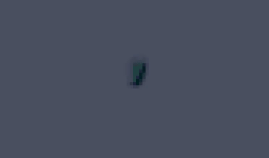
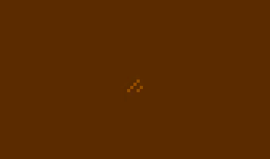
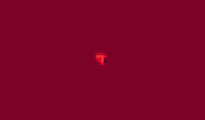

Wave Function Collapse
This is a very cool algorithm which generates arbitrarily large outputs that match the local patterns present in some input. The original implementation is by Maxim Gumin and he has a list of different places it has been used in the repo for the project here. The version which my implementation details is referred to as 'texture mode' or the 'overlapping model' depending on where you look.
The polynomial scaling to this algorithm makes it difficult to apply in the way I was trying to, O(n3) or O(n4) with the input, depending on how you look at it. It becomes unviable for large inputs, going from milliseconds of execution time to having to sit for an hour or more, just removing duplicates and calculating overlaps, before crashing from running out of RAM generating the output. The tileset generated becomes very large - even with the efforts I've made to make everything index to one set of distinct tiles, and reduce memory usage by indexing the colors to a palette as well, the indexing itself starts to get into gigabytes of RAM usage when generating the output.
My implementation had some issues, so you'll see some weirdness in the gifs of the generation step below.
How it Works
The core concept is based on constraint solving, by first iterating through all the data in the input to construct a model of overlap constraints. The model consists of a list of NxN tiles, parsed from the input image's pixels. The user can specify a 'symmetry' level which will indicate how many of the rotations and mirrored rotations to include in the list. I wrote some code which generalized all eight distinct orderings of the tile data by using two functions: mirror and a 90 degree rotation. Rotations can be generated by recursively applying the 90 degree rotation, and mirrored rotations can be generated by doing the same, but first applying the mirroring operation.
As each of these tiles is added, you need to check to see that there is no duplicates. I found that this is most effectively done as a pass once all cantidate tiles are parsed and generated, so you're not constantly iterating through what becomes a large list for significant inputs. As duplicates are encountered, the first encountered one has a count that is incremented.
Once the list of all distinct NxN tiles is constructed and ordered by frequency of occurrence, you're ready to start seeing the number of ways in which these tiles can potentially overlap. This brings you to the second step, in which we start to look at how these tiles can overlap. For each of these tiles, all other tiles are considered. For each tile that would make a pair with the tile under consideration, I iterate through the integer offsets from -N to N in the x and y which would allow those two tiles to sit on top of each other, and have their data match. If I find one or more offsets that will allow agreement between them, I add them to a list of rules, which keeps the offset and the agreeing tile ID.
The third step is then constructing the output model, which is a superposition of all possible tiles. To put that more simply, basically any given pixel in the output could sort of conceptually map to any of the tiles generated from the input, so we consider it as all of them at once, in a list. From this point there is a loop of observing and propagating the constraints. The first is the observe step, which basically picks a tile from the list of possible tiles, which has the least number of remaining possible states, "entropy", and says that we are fixing this tile's value. The propagate step then removes any tiles from the lists of neighbors which would violate the newly added constraint. Once all the pixels in the image are down to one remaining state, you've reached a solution. The issue with my implementation is that sometimes it would run out of tiles before this happened, which is a logical error and at some point I might revisit and try to fix this.
I put together a tool which would dump out all your NxN tiles, to visualize, as well as a tool to dump the constructed model I described above, as a JSON object (this file was several megabytes of text). Neither of these proved super useful, but the tileset generator makes some cool pictures, with a 1 pixel clear boder around edges and between tiles.


Below is one done with N = 3.